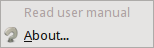
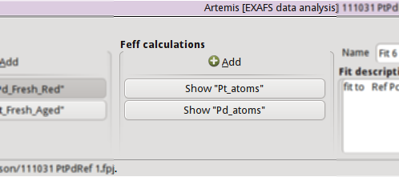

The main window
The main window provides an overview of the state of ARTEMIS as
well as of your current fitting project. This window is divided into
7 areas.

At the top is a menu bar. We will examine the contents of
each menu below.
At the bottom is the status bar. This area is used to convey messages
to you during the course of operating the program.
On the left is a stack of buttons used to show and hide various parts
of ARTEMIS. Each of these will be described in detail later in
the document.
To the right is the listing of data groups. The “Add”
button is used to import a new data set into ARTEMIS. As data
are imported, they will listed as a stack of buttons below the
“Add” button.
Next comes the listing of FEFF calculations. The
“Add”
button is used to import new structural data set into ARTEMIS.
This may be input data for FEFF, an
atoms.inp file, or a CIF file containing
crystal structure data.
As FEFF calculations are started, they will listed as a stack of
buttons below the “Add” button.
The wide area to the right of the FEFF calculations contains
several controls for the current fitting project. The
“Name” and
“Description” boxes are used to describe
the current state of your fitting project. The name should be a
concise description of the current fit and is used as a label
identifying a specific fit. The description is a lengthier, free-form
bit of text describing the current fit in more detail. This text
will; be written to log files. ARTEMIS does a decent job of
automatically generating text for both of these boxes, but providing
your own text will help you to document the progression of your
fitting project. This section also has controls for selecting the
space in which your fit is evaluated and for saving a project file in
a single click.
On the far right is the “Fit” button. As
you might guess, this button is clicked to initiate a fit. The color
of this button will change to provide a heuristic evaluation of the
quality of each fit. Below the Fit button is a button used to show or
hide a window containing the log from the most recent fit.
Main menu bar
The File menu
 Clicking on “File” displays this menu,
which is mostly used for various kinds of input and output. Note that
some menu items that have keyboard shortcuts attached and that these
shortcuts are shown in the menu.
Clicking on “File” displays this menu,
which is mostly used for various kinds of input and output. Note that
some menu items that have keyboard shortcuts attached and that these
shortcuts are shown in the menu.
The first option is used to import any kind of data into ARTEMIS,
including ARTEMIS or ATHENA project files, ASCII files
containing χ(k) data, FEFF or ATOMS input files, or
a few other things. ARTEMIS is usually good about properly
identifyin the type of input file and doing the right thing with it.
You can use the “import” submenu to be more
specific.
The second option provides a submenu of recently imported files broken
down by file type, including ARTEMIS projects, ATHENA
projects, structure data for ATOMS or FEFF, and a couple of
other more obscure file types.
The next two items are used to save ARTEMIS project files.
The “import” submenu is used to specify the
file type to import. Typically, this is not necessary and is only
provided for the rare situation when ARTEMIS fails to recognize
one of its standard input data types.
The “export” submenu is used to generate
files in the format of an IFEFFIT script or a perl script using
DEMETER. These files attempt to capture the current state of
your fitting project. It is unlikely that the output of either of
these export options will be immediately useful without some editing.
The purpose of these export options is to allow you to use
ARTEMIS to develop a fitting model, then use the exported file
in some other way, for instance as part of a script for automated batch
processing.
The next menu item diplsays a window used to set
program preferences.
Finally, there are menu items for closing the current fitting project
and for exiting the program. Each of these will prompt you to save
your fitting option if you have not recently done so.
The Monitor menu
|
 This menu provides several options for monitoring the state of
ARTEMIS, IFEFFIT, and the plotting backend (usually
GNUPLOT).
This menu provides several options for monitoring the state of
ARTEMIS, IFEFFIT, and the plotting backend (usually
GNUPLOT).
The command buffer contains a record of every data processing command
sent to IFEFFIT and every plotting command sent to the plotting
backend. Bruce uses these buffers to debug the prgram as he
implements new features. You may want to use these buffers to learn
the details of interacting directly with IFEFFIT or with the
plotting backend.
The status bar buffer contains a record of every message sent the
status bar in the main window as well as those messages displayed in
the status bars of other windows in ARTEMIS. All messages are
time stamped.
The “Show Ifeffit” menu will cause IFEFFIT
to display detailed information in the command buffer about the
internal state of different kind of data. This is another thing Bruce
uses to debug program issues.
The “Debug options” menu contains several
items used to display technical information about the current state of
ARTEMIS. Again, this is a tool Bruce uses when developing the
program. After reporting a bug to the IFEFFIT mailing list,
Bruce may ask for information obtained using these menu items.
This submenu is only displayed if the
♦Artemis → debug_menus
configuration parameter is set to a true value.
“Show Ifeffit's memory use” item displays a
crude, somewhat unreliable calculation of the resources still
available to IFEFFIT.
The Plot menu
|
 When using GNUPLOT as the plotting backend, you have an option
to direct plots to multiple windows, thus allowing you to plot
something new without removing an existing plot. This menu controls
which of four such plot displays is active.
When using GNUPLOT as the plotting backend, you have an option
to direct plots to multiple windows, thus allowing you to plot
something new without removing an existing plot. This menu controls
which of four such plot displays is active.
The Main help menu
|

This menu is used to display this document or to display information
about ARTEMIS, including its open source licensing terms.
Status bar
This area in the main window is used to display various kinds of
messages, including updates on long-running tasks, hints about
controls underneath the mouse, and other announcements.
On some platforms, the status bar is able to display color. If you
are one one of those platforms, the status bar will display with a
green background during a long running task and with a red background
when an error has occured or when something needs your immediate
attention.
Many controls in the main window and elsewhere have hints attached to
them which will be displayed in this status bar when the mouse passes
over. These hints are intended to teach about the functionality of
the control beheath the mouse. Hints are not recorded in the status
bar buffer.
Many short and long running tasks display updates of various kinds.
Many of these are recorded in the status bar buffer. Messages
displayed in the status bar with a green or red background are
recorded in the status bar buffer with green or red text. Messages
which only indicate the progress of a long running task are not
recorded in the buffer.
The Data list
The data list starts off with a single control, which is used to
import data into your fitting project. Clicking the
“Add” button will open the standard file selection
dialog for your platform. That is, on Windows, the standard Windows
file selection dialog is used; on Linux, the standard Gnome file
selection dialog is used; and so on.
|
 The standard manner of importing data into ARTEMIS is to use an
ATHENA project file. Thus the file selection dialog will, by
default, look for files with the .prj
extension.
The standard manner of importing data into ARTEMIS is to use an
ATHENA project file. Thus the file selection dialog will, by
default, look for files with the .prj
extension.
As you import data, a stack of buttons – one for each data group –
is made. These buttons are used to show or hide the windows
associated with each data group. In this example, a multiple data set
fit (i.e. one in which models for more than one data set are
co-refined) is shown. One of the associated data windows is displayed
on screen, as indicated by the depressed state of the button labeled
“Dimethyltin dichloride”. The other data
window is hidden. See the Data window chapter.
 ARTEMIS has a very different relationship to your data than
ATHENA. The very purpose of ATHENA is to process large
quantities of data, thus a typical ATHENA project will contain
many – perhaps dozens – of data groups. ARTEMIS
expects that you will import only that data whose EXAFS you intend to
analyze. If you doing a single-data-set analysis, the Data list
will contain only that item. If you import many data sets without
actually using them in the fitting model, ARTEMIS
will get confused. And so will you.
ARTEMIS has a very different relationship to your data than
ATHENA. The very purpose of ATHENA is to process large
quantities of data, thus a typical ATHENA project will contain
many – perhaps dozens – of data groups. ARTEMIS
expects that you will import only that data whose EXAFS you intend to
analyze. If you doing a single-data-set analysis, the Data list
will contain only that item. If you import many data sets without
actually using them in the fitting model, ARTEMIS
will get confused. And so will you.
The Athena project selection dialog
|
 When importing data from an ATHENA project file, the project
selection dialog is shown. It presents you with a list of all data
groups from the project file. The file listing is configured such
that only one item can be selected at a time. The selected data group
is also plotted. Any title lines from that data group are displayed
in the text box on the upper right.
When importing data from an ATHENA project file, the project
selection dialog is shown. It presents you with a list of all data
groups from the project file. The file listing is configured such
that only one item can be selected at a time. The selected data group
is also plotted. Any title lines from that data group are displayed
in the text box on the upper right.
Beneath that is a series of radio buttons for selecting how the data
are plotted. Each time you click on a data group from the list, it
will be plotted as selected.
The next set of radio buttons selects what set of Fourier
transform and fitting parameters will be used. The first choice says
to use the values found in the ATHENA project file. The second
choice says to use ARTEMIS's default values.
The third choice is only relevant when replacing the data in a current
fitting project. In that case, the values currently selected for the
data being replaced will be retained.
To continue importing data, click the
“Import” button. The
“Cancel” button dismisses this dialog
without importing data.
The recent data dialog
|
 You can access a list of recently imported data by
right clicking on
the “Add” button. This presents a
dialog with a selection list. Click on one of your recent files, then
click “OK”. Alternately, double click on
your choice in the list of recent files.
You can access a list of recently imported data by
right clicking on
the “Add” button. This presents a
dialog with a selection list. Click on one of your recent files, then
click “OK”. Alternately, double click on
your choice in the list of recent files.
The Feff list
The FEFF list starts off with a single control, which is used to
import structural data into your fitting project. Clicking the
“Add” button will open the standard file selection
dialog for your platform. That is, on Windows, the standard Windows
file selection dialog is used; on Linux, the standard Gnome file
selection dialog is used; and so on.
|

The standard manner of importing structural data into ARTEMIS is
to import an input file for ATOMS or FEFF or to import a
CIF file containing crystal data. Thus the file selection dialog
will, by default, look for files with the
.inp or
.cif extension.
As you import structural data, a stack of buttons – one for each
FEFF calculation – is made. These buttons are used to show or
hide the windows associated with each data group. In this example,
two FEFF calculations have been made. Neither is being
displayed on screen. See the Atoms/Feff chapter.
Right clicking on the “Add” button will present the same recent file selection dialog
as for the data list. In this case, the list will contain recetnly
imported ATOMS, FEFF, or CIF files.
Fit information
|
 This section of the main window is used to specify properties of the
fit. The name is a short bit of text that will be used as a label for
each fit. The number will be auto-incremented unless you explicitly
set it.
This section of the main window is used to specify properties of the
fit. The name is a short bit of text that will be used as a label for
each fit. The number will be auto-incremented unless you explicitly
set it.
The description is a longer bit of text which you can use to describe
the current fitting model. Here, too, the number is auto-incremented
unless you explcitly set it. The text from this box is written to the
log file, thus can be used to document your fitting model.
The set of radio buttons is used to select the space in which the fit
will be evaluated. The default is to evaluate the fit in R space.
Finally, the “Save” button is used to quickly
save your fitting model to a project file. If you model is already
associated with a file, this is a quick one-click saving tool. If no
project file is associated, the file selection dialog will prompt you
for a file. The default is to use the
.fpj extension.
Fit and log buttons
|
 All the way to the right of the main window are the
“Fit” and
“log” buttons. Click the Fit button to
initiate the fit. The log button is used to show and hide a window
which displays the log from the most recent fit.
See the chapter on
the Log and Journal windows.
In the event of a
fit that exits abnormally, error messages explaining the problems will
be show in the log window.
All the way to the right of the main window are the
“Fit” and
“log” buttons. Click the Fit button to
initiate the fit. The log button is used to show and hide a window
which displays the log from the most recent fit.
See the chapter on
the Log and Journal windows.
In the event of a
fit that exits abnormally, error messages explaining the problems will
be show in the log window.
At start-up the Fit button is yellow. After each fit, the color of
this button will range from red to green as a heuristic indication of
the fit quality. See the happiness chapter for more details.
|